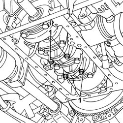
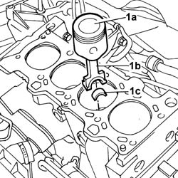
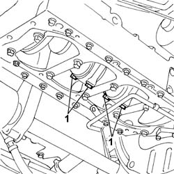
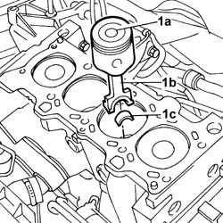

1028H11 PISTON CONNECTING ROD SET - R R
- Path
- Procedures > 10 ENGINE UNIT > 1028 PISTONS AND CONNECTING RODS > 1028H PISTONS AND CONNECTING RODS > 1028H11 PISTON CONNECTING ROD SET - R R
- Kind
- repair procedure (removal / refitting; the operation number is the code)
- Applies to
- engines: 2.0 16V, 2.8 JTD 8V; all production periods
- Interactive page
- https://sloeber94.github.io/elrnDB-fDct/en/#/244000683
Applies to: engines: 2.0 16V; all production periods
 Removing
Removing
 Refitting
RefittingOp. 1048A31 RIGID PIPE CONNECTING AIR CLEANER TO INLET MANIFOLD RIGID PIPE R R
Op. 7055B54 UNDER-ENGINE GUARD - R R
See in Op. 1072C10
Op. 1092C11 POWER STEERING PUMP DRIVE BELT - R R FOR VERSIONS WITH AIR CONDITIONER
Op. 1092B40 AIR CONDITIONER COMPRESSOR/ALTERNATOR DRIVE BELT - R + R
See in Op. 1092A12
See in Op. 1032D12
See in Op. 1032B14
See in Op. 1016C11
Op. 1024B54 ENGINE FLYWHEEL PROTECTION R R
See in Op. 1020A30
See in Op. 1084B28
1. Undo the bolts and remove the connecting rod caps complete with 2nd and 3rd cylinder lower connecting rod half-bearings.

Applies to: engines: 2.0 16V; all production periods
- Lower the vehicle.
1. Withdraw and remove 2nd and 3rd cylinder pistons (1a) with connecting rods (1b) and upper connecting rod half bearings.

Applies to: engines: 2.0 16V; all production periods
- Turn the crankshaft and proceed in the same way to remove the 1st and 4th cylinder pistons and connecting rods.
Applies to: engines: 2.0 16V; all production periods
Refitting
Removing- Fit the 1st and 4th pistons with connecting rods and connecting rod upper bearing halves using a suitable installing tool to compress the piston rings.
 | Description | Code | Function |
|---|---|---|---|
. | Fitting tool | 1.860.700.000 | Fitting tool |
- Fit the connecting rod caps complete with the half-bearings for cylinders no. 1 and 4 and secure them without tightening the bolts to torque.
- Proceed in the same way to fit the 2nd and 3rd cylinder pistons and connecting rods.
See in Op. 1084B28
See in Op. 1020A30
Op. 1024B54 ENGINE FLYWHEEL PROTECTION R R
See in Op. 1016C11
See in Op. 1032B14
See in Op. 1032D12
See in Op. 1092A12
Op. 1092B40 AIR CONDITIONER COMPRESSOR/ALTERNATOR DRIVE BELT - R + R
Op. 1092C11 POWER STEERING PUMP DRIVE BELT - R R FOR VERSIONS WITH AIR CONDITIONER
See in Op. 1072C10
Op. 7055B54 UNDER-ENGINE GUARD - R R
Op. 1048A31 RIGID PIPE CONNECTING AIR CLEANER TO INLET MANIFOLD RIGID PIPE R R
Applies to: engines: 2.8 JTD 8V; all production periods
Removing
RefittingSee in Op. 1088B10
Op. 0010T84 COOLANT FOR AIR CONDITIONING SYSTEM DEHYDRATE AND RECHARGE
See in Op. 1048B14
See in Op. 1048B22
See in Op. 1016A10
See in Op. 1060G22
Op. 7055B54 UNDER-ENGINE GUARD - R R
Op. 1080B62 CATALYTIC CONVERTER - R + R
See in Op. 1048A10
See in Op. 1060E10
See in Op. 1048B10
See in Op. 1016C11
- Fit the timing side flexible engine block by screwing in the retaining bolts without tightening.
- Remote the tool positioned beneath the sump for supporting the power unit.
| Description | Code | Function |
|---|---|---|---|
. | Crossmember | 1.870.735.000 | Lower engine mounting beam |
See in Op. 1020A30
Op. 1020A12 CRANKCASE OIL SUMP - VEHICLES WITH AIR CONDITIONER - R + R AND REPLACE GASKET
See in Op. 1084B28
1. Undo the bolts and remove the connecting rod caps complete with 2nd and 3rd cylinder lower connecting rod half-bearings.

Applies to: engines: 2.8 JTD 8V; all production periods
- Lower the vehicle.
1. Withdraw and remove 2nd and 3rd cylinder pistons (1a) with connecting rods (1b) and upper connecting rod half bearings.

Applies to: engines: 2.8 JTD 8V; all production periods
- Turn the crankshaft and proceed in the same way to remove the 1st and 4th cylinder pistons and connecting rods.
Applies to: engines: 2.8 JTD 8V; all production periods
Refitting
Removing- Fit the 1st and 4th pistons with connecting rods and connecting rod upper bearing halves using a suitable installing tool to compress the piston rings.
| Description | Code | Function |
|---|---|---|---|
. | Fitting tool | 1.860.700.000 | Fitting tool |
- Fit the connecting rod caps complete with 1st and 4th cylinder lower bearing halves and secure by tightening the bolts to the recommended torque. Carry out angular tightening separately and using an angle wrench for tightening.
| Description | Code | Function |
|---|---|---|---|
. | Torque wrench | 1.860.942.000 | Connecting rod cap bolt angular tightening |
 | Value - daNm | Fastening | Component | Ø |
|---|---|---|---|---|
. | 4,5 - 5,5 + 63° | Bolt | CONNECTING ROD CAP FASTENERS | M12 |
- Proceed in the same way to fit the 2nd and 3rd cylinder pistons and connecting rods.
See in Op. 1084B28
Op. 1020A12 CRANKCASE OIL SUMP - VEHICLES WITH AIR CONDITIONER - R + R AND REPLACE GASKET
See in Op. 1020A30
- Remove the tool positioned beneath the sump for supporting the power unit.
| Description | Code | Function |
|---|---|---|---|
. | Crossmember | 1.870.735.000 | Lower engine mounting beam |
- Undo the retaining bolts and remove the timing side flexible engine block.
See in Op. 1016C11
See in Op. 1032B14
See in Op. 1048B10
See in Op. 1060E10
See in Op. 1048A10
Op. 1080B62 CATALYTIC CONVERTER - R + R
Op. 7055B54 UNDER-ENGINE GUARD - R R
See in Op. 1060G22
See in Op. 1048B22
See in Op. 1048B14
Op. 0010T84 COOLANT FOR AIR CONDITIONING SYSTEM DEHYDRATE AND RECHARGE
See in Op. 1088B10
Topics linked from this page (12)
- 0010T11 ENGINE OIL CHECK LEVEL AND TOP UP
- 0010T20 COOLANT CHECK DENSITY AND TOP UP IF NECESSARY
- 0010T21 COOLANT CHECK DENSITY AND TOP UP IF NECESSARY
- 0010T84 COOLANT FOR AIR CONDITIONING SYSTEM DEHYDRATE AND RECHARGE
- 1020A12 CRANKCASE OIL SUMP - VEHICLES WITH AIR CONDITIONER - R + R AND REPLACE GASKET
- 1020A26 CRANKCASE SUMP - R R CLEAN MATING SURFACES AND APPLY SEALANT FOR VEHICLE WITH AIR CONDITIONER
- 1024B54 ENGINE FLYWHEEL PROTECTION R R
- 1048A31 RIGID PIPE CONNECTING AIR CLEANER TO INLET MANIFOLD RIGID PIPE R R
- 1080B62 CATALYTIC CONVERTER - R + R
- 1092B40 AIR CONDITIONER COMPRESSOR/ALTERNATOR DRIVE BELT - R + R
- 1092C11 POWER STEERING PUMP DRIVE BELT - R R FOR VERSIONS WITH AIR CONDITIONER
- 7055B54 UNDER-ENGINE GUARD - R R